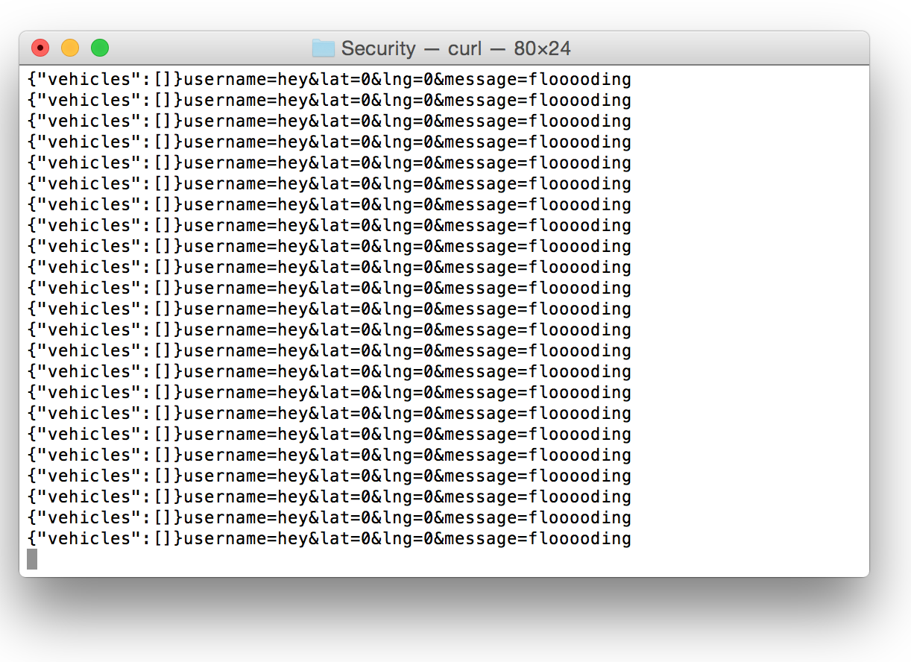

Security Assessment
By: Stephanie Wong, April 2017
Introduction
Notuber is an web application that matches a client to black cabs that are
available. The client will submit their username, longitude, and latitude to
the application which will then return the username, longitude, and latitude of
the 5 most recent black cab drivers and display them on the map.
Methodology
The first tests carried out were done in a "black box" manner, without seeing the source
code. I used Postman to carry out POST and GET requests. I then reviewed the source code
to look for more vulnerablities.
Abstract of Findings
The majority of the vulnerablities found came from trusting user input. User input is never
validated and thus creates opportunities for exploitation.
Issues found
Database query injection:
Location: the GET method /vehicle.json
Description: Queries are not validated, so by using MongoDB queries instead of strings,
i.e. using the input username[$ne]="swong02" to the path /vehicle.json
I was able to get the information of the first vehicle that was in the
database that did not have the username swong02.
Severity: medium, luckily, the implementation only used findOne instead of findAll, so only
the first document that matched the [$ne] was returned and not all of them.
Resolution: Sanitizing and validating the user input would fix this problem by
using the Validator module. The Validator module provided by NodeJS has a
function escape() that will validate all data and remove anything malicious
by replacing special characters with the HTML equivalent.
Proof:
Cross Site Scripting (XXS):
Location: the POST method /submit
Description: inputs are not validated, so by inserting a javascript script
i.e. "alert("hacked")" to the path /submit
I was able to insert this alert to the database so that every time someone
else accesses the "/" route, it was run
Severity: high, because instead of typing an alert script, one could have
inserted a redirect to another html that could potentially look like a login
page of some sort that the client could fall for and type in their details that would
then be sent back to the hacker's server and thus their information would all be leaked.
Resolution: Sanitizing and validating the user input would fix this problem by
using the Validator module. The Validator module provided by NodeJS has a
function escape() that will validate all data and remove anything malicious
by replacing special characters with the HTML equivalent.
Proof:
Database flooding
Location: the POST method, /submit
Description: Inputs are not validated so a hacker could potentiall spam and flood
the server with random inputs. Using a bash shell script, I flooded the database with random inputs
through curl. This could potentially flood the database, causing it to crash. The shell script
that I wrote was:
Severity: medium, this could just be harmless and doesn't do anything particularly malicious. But
by flooding the server, the website could crash.
Resolution: Have a system for verifying logins, like a CAPTCHA system or requiring users to
create an account.
Proof:


Conclusion
There are a lot of security vulnerabilities to this website, but the suggestions made could
significantly help make this website more secure against basic attacks.These improvements
are all simple and easily implemented but will significantly increase the security of the website.
References
http://www.veracode.com/security/xss